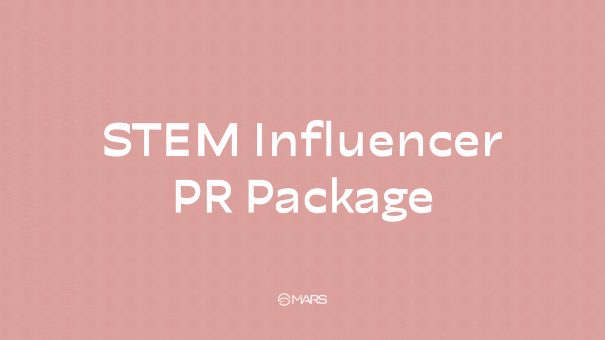
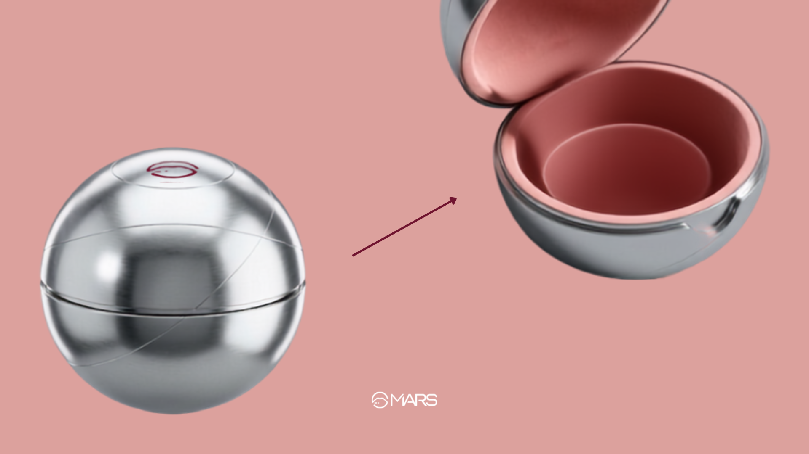
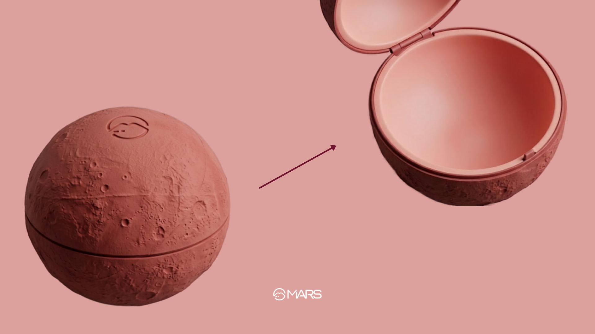

The Strategy (Get / To / By)
- GET: STEM content creators who beauty brands usually overlook.
- TO: Unbox and organically endorse MARS Cosmetics.
- BY: Sending a custom PR package shaped like the planet Mars.
The Consumer Journey
| Phase | The Barrier | The Comms Task | Core Channels |
|---|---|---|---|
| Living (Awareness) | Beauty ambassadors are almost always conventional beauty influencers first — STEM creators, or anyone who doesn't fit that mold, aren't seen as the obvious choice for beauty brands. | Show up where no beauty brand has before. Send STEM creators "a delivery from Mars" and make them feel like the first choice, not an afterthought. | Influencer Seeding, Unboxing Videos |
| Looking (Consideration) | Beauty is still pictured as one narrow type of person — so a STEM creator repping makeup feels unexpected, and consumers aren't sure what to make of it. | Use the MARS pun to go full space-themed — turn the packaging itself into proof that beauty can stretch beyond the usual mold. | Social Media (Behind-the-Scenes Unboxing), Instagram Reels |
| Buying (Conversion) | Anyone outside the typical beauty image doesn't automatically see themselves as "a beauty person" — including STEM girls. | Widen what "beauty" looks like beyond one box, so "every kind of baddie" feels seen — even the one studying STEM. | D2C E-commerce Website, Influencer Affiliate Links |
Key Performance Indicator
A high volume of organic unboxing content and creator commentary from STEM and non-traditional influencers, directly correlating to a measurable spike in branded search volume and site traffic from audiences who wouldn't normally look up a makeup brand.



.png)

Moodboard